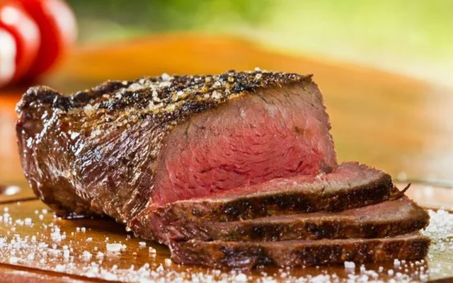

Home | Receita 1 | Receita 2 | Receita 3 |
Esta página é a descrição completa da receita.

Quem mora em apartamento não pode fazer fumaça, mas isso não significa que o churrasco está fora de questão. O churrasco na airfryer vai assar a carne e deixar naquele ponto ideal sem que você deixe seu lar defumado. A lista de ingredientes é bem básica e não tem nada demais: apenas a carne e o sal grosso, como no churrasco tradicional. Aqui, indicamos que você utilize contrafilé, mas pode ser qualquer outro corte de carne que você prefira. É importante preaquecer a fritadeira para que a carne asse corretamente. Para evitar que ela grude nas grades do cesto, você pode colocar a gordura para baixo. Você vai assar a carne a 200° por doze minutos. É importante que a peça de carne não seja grossa ou fina demais, ou ela pode passar do ponto ou ficar mal passada demais. Faça essa receita e experimente o churrasco mais prático que você já comeu.